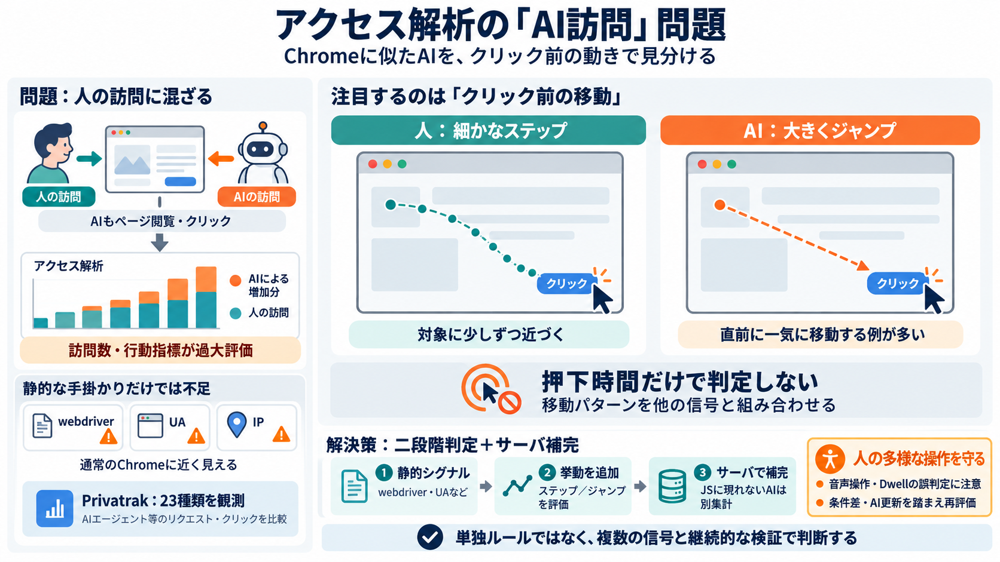

Browser agent bot detection is about to change
AI agents are about to flood the web. When bot traffic reaches a tipping point, the cost of letting bots through starts …

AI agents are about to flood the web. When bot traffic reaches a tipping point, the cost of letting bots through starts …
AI agents and agentic browsers represent a new class of automation on the web: user-directed sessions where an AI system…
Detection methods: Choose vendors that combine behavioral analysis, fingerprinting, machine learning, and threat intelli…
"Teams shouldn't have to choose between incomplete automation and tedious manual reviews," said Ritesh Arora, Co-founder…
"Teams shouldn't have to choose between incomplete automation and tedious manual reviews," said Ritesh Arora, Co-founder…